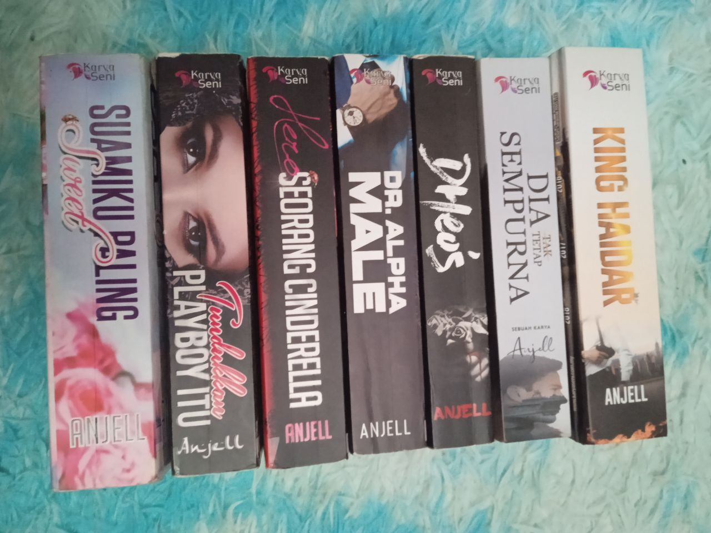

AISHAH'S HOBBIES
Hobbies play a very important role in our lives. They occupy our minds when we are free and also make us happy. Hobbies are our escape from the real world that makes us forget our worries. I have several hobbies and this page, I will show you my hobbies.
First and foremost, I like to take a picture of everything. Sky, sunset, beach, plants, random scenery and so on. For me, every picture that I took hold a different story and it’s felt good when I look back the old picture that I took.

I also love to read. I like books since I was a kid. I can read every genre of the book expect self-help book. Bookstore is the most visit place every time I went to the mall. I’m currently addicted to Fixi book right now.
Lastly, I like to draw even though I can’t draw and not talented, but I’m just draw random thing just to release the tension. Unfortunately, I had to give up this hobby for a while because the cost for all the drawing tools are a bit pricey and I cant afford it. I hope someday I can continue to draw.